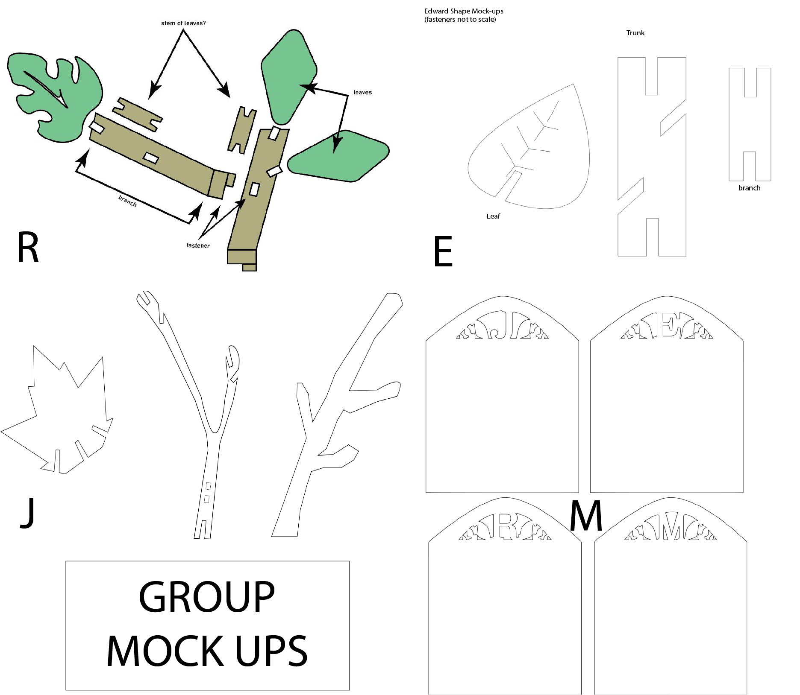

Modularity, Tesselation & Complexity
Phase 1
1st pass: Exercise in Testing some 2d Tesselations and Origami Modules
Petra Star origami

I connected the shapes in which I made a circle and a folded flat box.

I connected the triangle angle and used the pockets to insert each module.
Created a simple triangle tesselation.
Messed with the colors and moved it around.

This one definitely made me think of flowers. We usually find math in nature.
Group tesselation.
2nd Pass: Exercise in group Tesslation and Modularity with some 2d Shapes

Our group decided to start a diamond as shape. We made our own shapes and decided Edward's design to be the final common shape we all share.

This is my own design off of the common shapes.

Group mates shapes to connect together.

Final result of our shapes connceted created a scales/chain mail pattern. It mostly just connected diagonally like that since the top and bottom have to stay the same to connect with each other. I thought it was challenging to communicate that our shapes had somehow connect with each other. I thought each piece all had to incorporate our shape into the common connecter. Looking at other groups, I think we all were a bit confused of how our shapes should have connected. Our shapes put together cannot be pieced together, while other groups struggled to fill in the gaps of their modularity. It would be interesting to see checkered pattern instead of a stripe pattern I did when I was messing with colors.
Phase 2: 3D Fastener BrainStorming Designs, Mockups and design approaches

My inspiration came from product and packaging design. I always see these flaps and a cut slit being used to fasten food containers, boxes, and other products.

Used illustrator to draw and a cricket to cut out my shapes. So my shapes are basically a + shape which is almost forms a closed box. I added a cut out square for design.
I used an x-acto knife to cut a slit on part of the end to insert the tab. The fastener works really well because the rectangle hooks hangs onto the slit paper.
When using less parts, this can also be formed into a box shape, but with 6 pieces, ended up with a spherical shape.

It turned out well than I thought it would.
Phase 2:
Fastener Designs

Jason created a prototype of the finger joints.
The fastener test.
We added on other fasteners besides the finger joints. We revised the final versions and made sure everything connected and not leave any gaps.

Marc made a really cool emblem design for our box TEAM JERM WHOO!
We decided to create a box shape using finger joints. We also created something on top to add another layer of a box. There are different angle slots and key "fork" fasteners to connect each square on top of each other like a 3 tier cake almost. The material we will be using to lazer cut is wood and we hope that the edges and fasteners give us the freedom to place each square in a different way. It was very interesting trying to think of creating a 3D piece by creating a 2D Design. You really have to consider how the result will be once its actually put together.
Phase 3: Goldilocks Laser Tests
Fastener Designs

Our group initially wanted to create a box shape with different fasteners.Each side of the box had our initials and it was supposed to be a keepsake box where you can unconnected it and form it different ways like a lego piece. The design of the box ended up getting cut and we realized we had to not make the lines connect or else the lazer will just cut off the entire thing. If you looked at our fastener designs, you can see that the JERM pieces did not make it. We made a lot of extra pieces so I'm glad that those survived. It would be more interesting if we considered using weird off shapes incorporated into the pieces. We mostly stuck with squares because we wanted to make sure the fasteners worked. For our next design, I really want to try making more interesting shapes that form together to make a coherent piece.Yet again, from this experience, to visualize things in a 3D form but making 2D parts was a bit tricky to make. I think we're getting a hang of it.
Phase 4:
Virtual Work and Rough Draft Schema of Final Design

The 2nd lazer cut test for our pieces for the Tree of Life.
Final Design Pieces
Edward = pink
Jason = blue
Marc = orange
Rachel = green
illustrator file for final cut pieces.
Final results.
Documentation
Schema
Artist Statement
I worked with Edward, Jason, and Marc to create the Tree of Life. For our group project, Edward came up with the idea of creating a wooden tree. To take this idea further, Marc took that concept to create the Tree of Life and the lore behind it. My interpretation of the Tree of Life is our life experience itself. Our knowledge, life experience, and individual development change as we get older. I also took the interpretation that it's also about creating networks and connections with other people. Along with the lore, I think as members of our society and being the younger generation, it's also our responsibility to prevent harming the Earth with all the pollution and destruction of our natural resources. I really enjoy going out in nature and I always find myself coming back to nature as reference. As a result, I thought the concept and the design of the project was really fun to do and something I was totally down to do.
In our group, we’ve decided to use wood as our material and as our fasteners we used slots and slide inserts. We split our tasks of creating the shapes based on the anatomy of the tree which is: branches,leaves,stems,base/pot. It was really fascinating to work with the laser cutter because I never used it before. It was very meditative to watch and super interesting how it’s been cut with a laser. I wanted to make the branches more dynamic and branch off in different ways, so I decided to use the slide fastener to make the branches more organic looking. Jason took a different approach and made the branches look more “antler” like and used the notch system to connect the pieces. I also added small branch “mutation” or “bumps” to the branches so the branches don’t look too smooth looking. My favorite types of plants are succulents and tropical plants. I decided to use succulent “leaves” and monstera leaves incorporated into the design. Edward made the trunks of the tree and also created the leaves. Marc created the pot design with the first letter of our name. Jason made sure to add the fasteners for our projects, created the files for export, and made appointments for our build time. Jason and Marc helped build the tree while I documented them building it. Recording the video, I realized the footage was a bit shaky but Edward was able to work around it really well and made a great video. Marc also helped photograph the build. Jason painted the pieces before our build. We also had both Jason and Marc pick up the laser cuts for class. Everyone was communicative and we worked really well together to make the final end product.
As a result of the build, I was very surprised how well the tree did not collapse, even when building it out very big. One thing I would critique is the base of our piece. I think if we had a larger base, I think it would match the size? Maybe if we scaled the base to be larger it would look really good aesthetically especially it being built in a large scale.That’s just a minor detail. Ultimately, I was just relieved that all our pieces fit together in the group, and that everything worked out really well in the end. I couldn’t be any more happier and relieved about the end of the product. It’s been a while since I’ve worked in groups and I usually don’t ever like being in groups because some people don’t ever pull their weight in the group. I’m also very quiet as a person, but as I got to know my teammates, the more I started to let my wall down. I really enjoyed being a part of TEAM JERM. It was really fun and nice working with Marc, Jason, and Edward for the project.
Contributions
- Created Schema for Tree of Life
- Filmed Video for documentation on Build day,exported video to be editted by Edward
- Revised some pieces to make sure everything fits before final cut AI.
- Compiled group pieces together and seperated them by color of whose pieces they are.